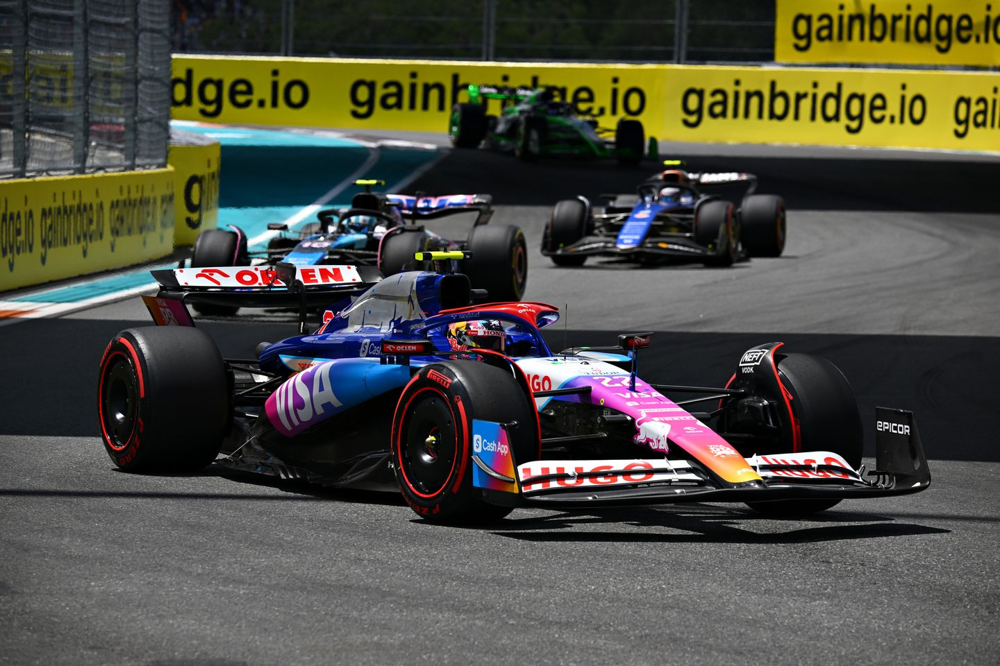

F1 Desktop
Piloto
Datos personales
- Nombre: Yuki Tsunoda
- Dorsal: 22
- Nacimiento: 11 de mayo de 2000 (24 años)
- Lugar de nacimiento: Sagamihara, Japón
Presentación
La carrera de Tsunoda comenzó en el mundo del karting a los 4 años. En 2013 consiguió su primera victoria en un campeonato de karting regional. Su debut en los monoplazas se dió en 2016, cuando entro al Campeonato Japonés de Formula 4 en Suzuka, cosechando victorias durante 3 años.
En 2019, ascendió a Formula 3, y al año siguiente a Formula 2 y en 2021 fue fichado por el equipo de AlphaTauri, en la actualidad Tsunoda se mantiene con el mismo, ahora llamado RB Formula One Team.
Aficiones
Equipos
- Scuderia AlphaTauri
- Visa Cash App RB Formula One Team
Conceptos
- Monoplaza
- Vehiculo de carreras, caraterizado por su aerodinámica, ruedas descubiertas y un solo asiento. Muy ligeros y potentes, especialmente diseñados para competir a altas velocidades.
- Downforce
- Fuerza que empuja el monoplaza hacia abajo en las curvas, permitiendo que se mantenga la estabilidad y tracción.
- DRS (Drag Redution System)
- Sistema que permite reducir la resistencia aerodinamica del vehiculo al abrir una parte del alerón trasero en ciertas zonas del circuito. Facilita los adelantamientos en lineas rectas.
- Pole Position
- Primera posición en la parilla de salida. Se otorga al piloto con el mejor tiempo de la clasificación. Proporciona una ventaja estrategica.
- Pit Stop
- Parada del coche en boxes durante la carrera para cambiar neumaticos, reparar daños o reconfigurar el coche. Los equipos trabajan de forma extremadamente coordinada y rápida para minimizar el tiempo en boxes, de forma que normalmente duran tan solo unos pocos segundos.
Mejores Resultados
- Formula 1
- 2024 (en disputa): 12º Puesto, 22 puntos
- 2021: 14º Puesto, 32 puntos
- Formula 2
- 2020: 3er Puesto, 200 puntos
- Formula 3
- 2019: 9º Puesto, 67 puntos
Resultados Temporada 2023
| Puntos obtenidos | Posición | Poles | Victorias | Podios |
|---|---|---|---|---|
| 17 | 14º | 0 | 0 | 0 |
Enlaces relacionados